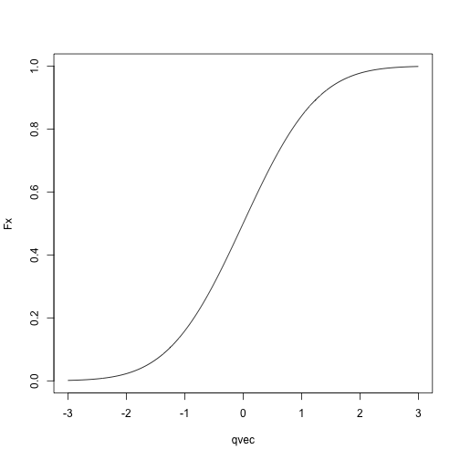
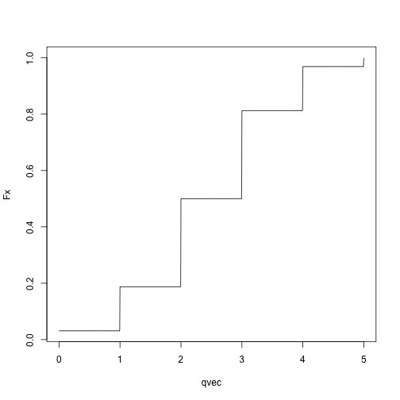
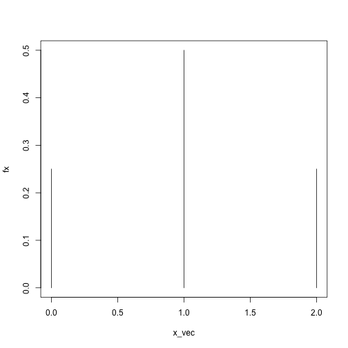
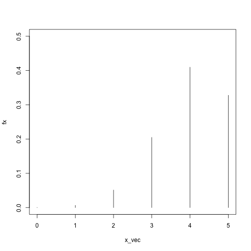
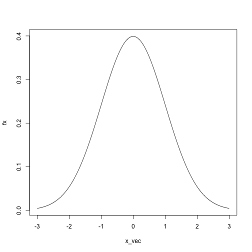
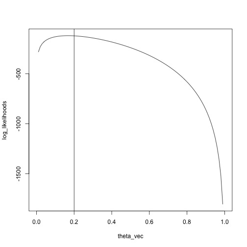

Today: Transitioning away from R/software engineering, towards algorithms for statistics
Agenda
Probability/maximum likelihood review
Distributions in R
Fitting distributions
Logistics:
Final project: can be done individually or in teams of up to 3
Due the last day of classes
Email me with your group and desired topic by November 5.
We need to know about random variables and their distributions.
What is a random variable?
Very formally: a function from a state space to the real numbers
Less formally: Think about random variables as describing the outcome of an experiment
In R, you can draw a random variable from a distribution with functions of the form rdist.
rnorm draws a random variable from a normal distribution.
rbinom draws a random variable from a binomial distribution
rpois draws a random variable from a Poisson distribution
… and so on
Syntax is rdist(n, param1, param2,..., paramn)
n is the number of random variables to draw from the distribution.
param1, …, paramn are the parameters of the distribution (e.g. mean and standard deviation for the normal, mean for the Poisson, probability of success for the binomial)
A random variable is characterized by its cumulative distribution function (CDF).
Measures the probability that the random variable takes a value at most \(x\).
If \(F_X\) is the cumulative distribution function for a random variable \(X\), \(F_X(x) = P(X \le x)\).
Can get all the other information you need about the random variable from this function (e.g. probability it lies above a certain value, probability it lies in an interval, probability it lies in other sets)
In R, the cumulative distribution functions for common distributions are available as pdist, so
pnorm gives the cumulative distribution function for a normal distribution.
pbinom gives the cumulative distribution function for a binomial distribution.
ppois gives the cumulative distribution function for a Poisson distribution.
Syntax is pdist(q, param1, ..., paramn)
Returns \(F_X(q)\), if \(F_X\) is the cumulative distribution function for a random variable \(X\) following distribution dist
param1, …, paramn are the parameters of the distribution
For example:
Normal CDF:
qvec = seq(-3, 3, length.out = 1000)
Fx = sapply(qvec, pnorm, mean = 0, sd = 1)
plot(Fx ~ qvec, type = 'l')
Binomial CDF:
qvec = seq(0, 5, length.out = 1001)
Fx = sapply(qvec, pbinom, size = 5, p = .5)
plot(Fx ~ qvec, type = 'l')
Remember that rdist draws random variables from dist, and pdist(q) computes the probability that a random variable with distribution dist takes a value less than or equal to q?
Let’s check:
## draw 100 random variables from a normal with mean 0 and sd 1
x = rnorm(n = 1000, mean = 0, sd = 1)
## compute what fraction of the random variables are at most -.5
q = -.5
mean(x <= q)## [1] 0.3## compute what fraction of the time the random variables should be less than or equal to -.5
pnorm(q = q, mean = 0, sd = 1)## [1] 0.3085375Not exactly the same, but pretty close!
## try again with a binomial distribution
x = rbinom(n = 1000, size = 5, prob = .2)
## compute what fraction of the random variables are 1 or less
q = 1
mean(x <= q)## [1] 0.748## compute what fraction of the time the random variables should be 1 or less
pbinom(q = q, size = 5, prob = .2)## [1] 0.73728Again, pretty close! You can check for other values of q and other distributions.
Final concept: probability mass functions and probability density functions
Probability mass functions describe discrete radom variables
Probability density functions describe continuous random variables
Discrete random variables:
The random variable can take on either a finite number of values or a countable number of values
For example: binomial random variable with size \(n\) and probability \(p\) can take values \(0, 1, 2, \ldots, n\)
For example: A Poisson random variable can take values \(0, 1, 2,\ldots\)
If \(X\) is a discrete random variable, there are some values \(x\) for which \(P(X = x) > 0\).
Definition of probability mass function: If \(f_X\) is the probability mass function for a random variable \(X\), \(f_X(x) = P(X = x)\).
In R: probability mass functions for common distributions are given by functions of the form ddist.
Syntax: ddist(x, param1, ..., paramn) computes \(f_X(x)\) for the a random variable \(X\) following distribution dist with parameters param1, …, paramn
x_vec = 0:2
fx = sapply(x_vec, dbinom, size = 2, prob = .5)
plot(fx ~ x_vec, type = 'h', ylim = c(0, .5))
x_vec = 0:5
fx = sapply(x_vec, dbinom, size = 5, prob = .8)
plot(fx ~ x_vec, type = 'h', ylim = c(0, .5))
As before, we can check that our definitions are consistent:
## generate random variables from a binomial distribution with size = 2 and prob = .5
X = rbinom(n = 1000, size = 2, prob = .5)
head(X)## [1] 0 1 2 0 1 0## compute the fraction of the random variables that took value exactly equal to 1
x = 2
mean(X == x)## [1] 0.239## [1] 0.25Apologies for the notation, but the norm is to denote random variables by capital letters and to denote the actual values they take by lower-case letters.
You’ll often see things like \(P(X = x)\), which means the probability that a random variable \(X\) takes value \(x\).
Continuous random variables:
Formally: A random variable whose cumulative distribution function is continuous.
You can think of this as random variables that can take values either on the entire real line, or on subsets of the real line.
For example: normal distribution, gamma distribution
In contrast to discrete random variables, if \(X\) is a continuous random variable, there are no values \(x\) for which \(P(X = x) > 0\).
Because of this, we can’t define a probability mass function the way we did for discrete random variables, we have to do something else, and that something else is a probability density function.
Probability density function formally: If \(X\) is a continuous random variable with cumulative distribution function \(F_X\), the probability density function of \(X\), \(f_X(x)\), is defined as \(f_X(x) = F_X'(x)\).
Think of as analogous to probability mass functions
\(P(X = x) = 0\) for continuous random variables, but…
The random variable \(X\) is more likely to take on values close to \(x\) if \(f_X(x)\) is large than if \(f_X(x)\) is small.
In R: probability density functions for common distributions are given by functions of the form ddist (the same as for probability mass functions)
Syntax: ddist(x, param1, ..., paramn) computes \(f_X(x)\) for the a random variable \(X\) following distribution dist with parameters param1, …, paramn
x_vec = seq(-3, 3, length.out = 1000)
fx = sapply(x_vec, dnorm, mean = 0, sd = 1)
plot(fx ~ x_vec, type = 'l')
Random variables are like any other variables, but the values they take are random
If \(F_X\) is the cumulative distribution function for a random variable \(X\), \(F_X(x)\) gives \(P(X \le x)\), and characterizes the distribution.
If \(f_X\) is the probability density or probability mass function for a random variable \(X\), \(f_X(x)\) large means that \(X\) is more likely to take values exactly equal to \(x\) (for discrete random variables) or close to \(x\) (for continuous random variables).
Setup: We have a set of data points \(x_1, \ldots, x_n\), and we want to find a probability distribution that describes the data well.
Why do we want to do this?
We are interested in the parameters
Data compression
Uncertainty quantification
Two main strategies:
Maximum likelihood
Method of moments
Many variations on these themes
Problem: We have a family of probability distributions, indexed by a parameter \(\theta\), and we need to choose one to describe the data.
Solution, heuristically:
Assume that our data \(x_1, \ldots, x_n\) are realizations of independent random variables \(X_1, \ldots, X_n\), each coming from some distribution, with a parameter (vector) \(\theta\) controlling the distributions.
Find the value of \(\theta\) that makes the data most likely.
Use either the probability density (continuous random variables) or probability mass (discrete random variables) to describe how likely the data is for a given value of the parameter \(\theta\).
Formally:
Let \(f(x; \theta)\) be the probability density function or probability mass function of a random variable with drawn from a distribution with parameter \(\theta\).
With independent data points \(x_1\), \(x_2\), \(x_n\), the likelihood is
\[ L(\theta)=\prod_{i=1}^n f(x_i;\theta) \]
Recall that the probability density/mass function describes how likely a random variable is to take a given value.
If \(f(x_i; \theta)\) is high, it is very likely that we would see the value \(x_i\) if \(x_i\) really came from a distribution with parameter \(\theta\)
If \(f(x_i; \theta)\) is low, it is unlikely that we would see the value \(x_i\) if \(x_i\) really came from a distribution with parameter \(\theta\)
Therefore: find the value of \(\theta\) that maximizes the likelihood.
In practice, we work with the log likelihood instead of the likelihood:
\[ \ell(\theta) = \sum_{i=1}^n \log f(x_i; \theta) \]
Easier to work with analytically
Better computationally because multiplying lots of small numbers together is bad (if you have a lot of data points you can get within machine tolerance of 0).
For example: we have data points \(x_1, \ldots, x_n\), and we want to find the \(N(\theta, 1)\) distribution that fits the data the best.
The likelihood is \[ L(x; \theta) = \prod_{i=1}^n \frac{1}{\sqrt{2\pi}}\exp((x_i - \theta)^2) \]
and the log likelihood is \[ \ell(x; \theta) = \sum_{i=1}^n\log \left( \frac{1}{\sqrt{2\pi}}\exp((x_i - \theta)^2) \right) \]
We can use dnorm in R to compute the log likelihood for any \(x\) and \(\theta\) we want:
Alternately, just search over the grid:
## [1] 4.242424## [1] 4.2Another example: Binomial, five trials, unknown success probability.
Compute the likelihoods for many possible values of prob
x = rbinom(n = 100, size = 5, prob = .2)
theta_vec = seq(0, 1, length.out = 100)
log_likelihoods = sapply(theta_vec, likelihood, x)
plot(log_likelihoods ~ theta_vec, type = 'l')
abline(v = .2)
We see that the maximum is pretty close to the true value, \(.2\)
## [1] 0.2222222In the binomial and normal examples, we used grid search.
Two reasons why those examples are silly:
We have closed-form solutions to the problems, so we don’t need to search.
Even if we didn’t have closed-form solutions, there are more efficient ways of finding the maximum than grid search.
One reason why getting the numbers is non-trivial:
Maximum likelihood in each case is \(\sum_{i=1}^n x_i / n\).
How does the computer get the actual numbers out? Division is easy to write down but actually non-trivial.
For the simple case where all the data come from the same distribution, can use fitdistr
Syntax: fitdistr(x, densfun, start) with
x: A vector of length at least 1 containing the data
densfun: A function whose first argument is the value at which we want the density evaluated and whose subsequent arguments are the parameters of the distribution.
start: Starting values to use when searching for parameters.
Negative binomial distribution:
Suppose we have a coin that we flip repeatedly, with \(P(heads) = p\).
We flip the coin until we have seen \(r\) tails.
If we let \(X\) be a random variable describing the number of heads we saw, \(X \sim NB(r, p)\).
Probability mass function of \(X\): \[ \begin{align*} P(X = x) &= \begin{pmatrix}x+r-1 \\x \end{pmatrix}(1-p)^r p^x \\ &= \frac{(x+r-1)!}{(r-1)!x!}(1-p)^r p^x \end{align*} \]
Suppose we have \(x_1,\ldots, x_n\), and we want to fit a negative binomial distribution, i.e., find the values of \(r\) and \(p\) that make \(x_1,\ldots, x_n\) the most likely.
The log likelihood of \(x_1,\ldots, x_n\) is \[ \sum_{i=1}^n \log((x_i + r - 1)!) - \log((r-1)!) - \log(x_i!) + r \log(1-p) + x \log p \]
If you go through the calculus, you can find a closed-form solution for the maximizing value of \(p\): \(\hat p = \frac{\sum_{i=1}^n x_i}{n r + \sum_{i=1}^n x_i}\).
There is no closed-form solution for \(r\).
Note: there are multiple parameterizations of the negative binomial, and R uses a slightly different one than what we defined above.
library(MASS)
x = rnbinom(n = 1000, size = 4, mu = 5)
nb_fit = fitdistr(x, densfun = dnbinom, start = list(size = 1, mu = 1))
nb_fit## size mu
## 4.0002773 4.9868542
## (0.3367479) (0.1058447)We can check informally that these values of mu and size are maximizers:
fitted_log_lik = dnbinom(x, size = nb_fit$estimate["size"], mu = nb_fit$estimate["mu"], log = TRUE)
sum(fitted_log_lik)## [1] -2522.539## the log likelihood at a couple other values of mu and size
sum(dnbinom(x, size = 2, mu = 3, log = TRUE))## [1] -2759.271## [1] -2643.876The examples so far have all been for the simple case where we assume that all the data come from the same distribution, but:
In general, we can let different data points come from different distributions, but the setup is the same:
We have a parameter vector \(\theta\).
Different values of \(\theta\) correspond to different distributions for the data.
We want to find \(\theta\) that maximizes the likelihood of the data.
We have data \(y_i, \ldots, y_n\) and \(x_1,\ldots, x_n\).
We assume that the \(y_i\)’s are realizations of random variables: \[ \begin{align*} y_i \sim N(\beta_0 + \beta_1 x_i, \sigma^2) \end{align*} \]
In this case:
The \(y_i\)’s don’t come from the same distribution (they are assumed to have different means).
\(\theta = (\beta_0, \beta_1, \sigma)\) is our parameter vector, and we want to find the value of \(\theta\) that makes the data the most likely.
Fitting probability distributions just means finding the one that “looks” the most like your data, according to some measure.
For all but very simple cases where we can get closed-form solutions with pen and paper, we need more computational tools to fit these distributions.
Over the next couple of weeks we will be looking at algorithms for this problem in more detail.